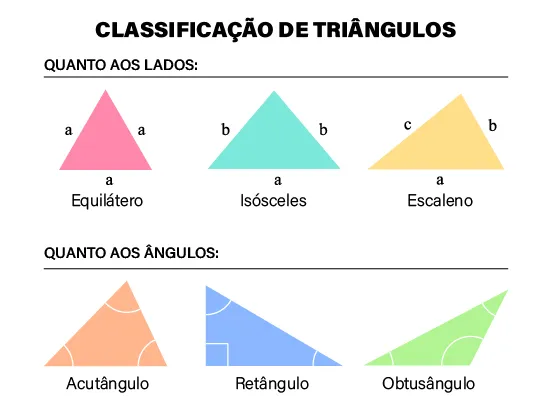
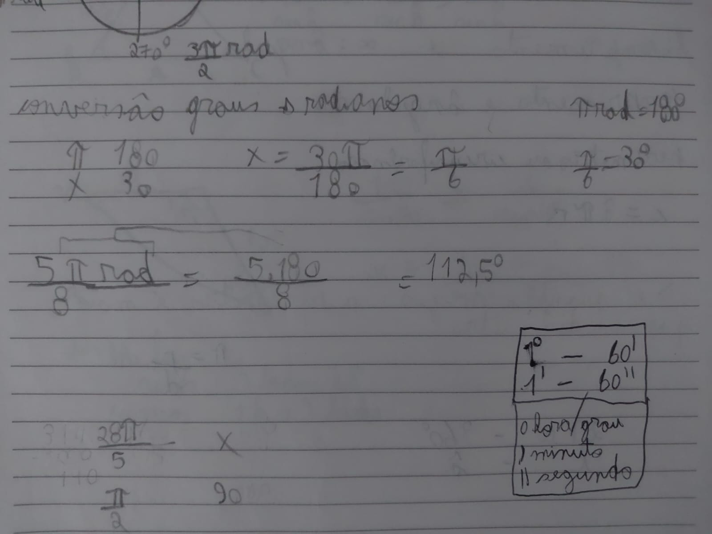
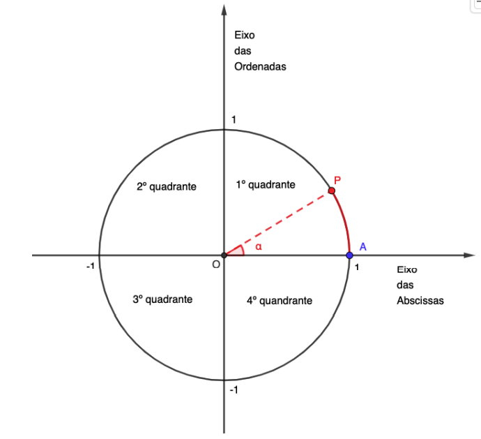
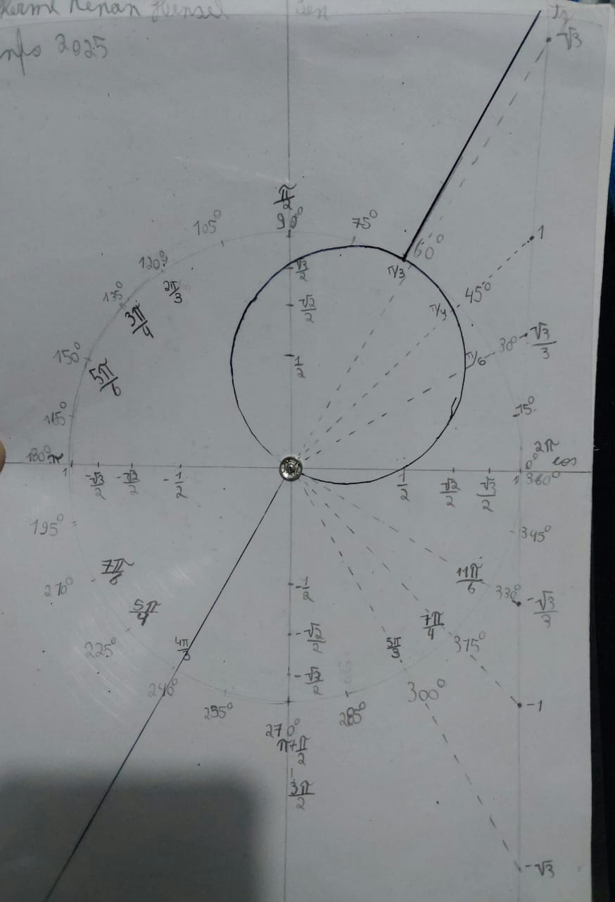
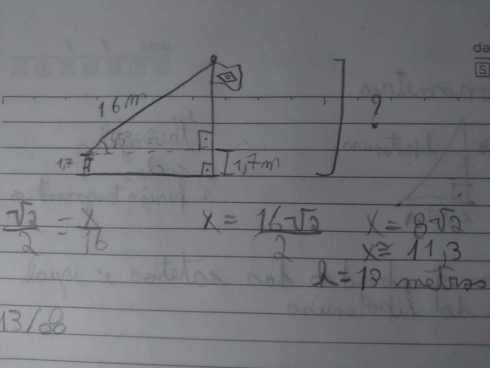

Sumário
Arcos de circunferência
Ciclo Tigonométrico
Funções Trigonométricas
Auto Avaliação
Trigonometria, Lei dos Senos e Cossenos
Trigonometria em qualquer triângulo
As equações gerais que podem ser usadas para qualquer tipo de triângulo, seja ele retângulo, acutângulo ou obtusângulo
 Retirado de PreParaEnemPara fazer a trigonometria encontrar qualquer lado e ângulo de um triângulo qualquer usamos Lei dos Senos e dos Cossenos
Lei dos Senos
Para fazer a trigonometria usando senos.
A lei é o seguinte
Tendo um triângulo 3 lados, a, b, c e sendo os ângulos opostos aos lados respectivamente, A, B, C então a lei fica
a/senA = b/senB = c/senC
 Retirado de Toda Matéria
Retirado de Toda Matéria
a = b = c
sen(A) sen(B) sen(C)
Lei dos Cossenos
Para fazer a trigonometria usando cossenos
A lei é o seguinte
Tendo os mesmos valores de lado e ângulo, lados a, b, c e ângulos A, B, C e digamos que eu quero descobrir o a então a lei é o seguinte
a² = b² + c² - 2b*c * cosA
 Retirado deLink
Retirado deLink
Como pode ver a lei dos cossenos se assemelha com o teorema de Pitágoras no começo a² = b² + c² e ela varia conforme quem você quer achar no triângulo
Arcos de Circunferência
Definições
A Circunferência é o perímetro de um círculo e um arco é um trecho da circunferência delimitado por dois pontos.
Para cada arco podemos associar duas medidas:
- Comprimento do arco(medida linear)
- Ângulo, formado por dois raios(medida angular)
Considere a figura e as conclusões
 Arquivo do Sigaa
Arquivo do Sigaa
Analisando a figura vemos dois círculos compartilhando o mesmo ângulo, oque diferencia-los é o raio que é menor e portanto a circunferência e o arco são menores
Comprimento e Ângulo de um Arco
Como já vimos antes as duas medidas. O comprimento de um arco é sua medida linear e pode ser indicado emmilímetro, centímetro, metro etc. Se fosse possível retificar esse arco transformando-o em um segmento, conseguiríamos medi-lo com uma régua reta.
Fórmula da circunferência
c = 2πr comprimento é igual a dois vezes PI(π) vezes o raio(r)
Além disso 2 vezes raio é o diâmetro então a fórmula pode ser reescrita assim
c= d*π
Temos que π é quantas vezes o perímetro(circunferência) é maior que o diâmetro. Chegamos as conclusões
π = p/d ou c/d circunferência dividida pelo diâmetro
2πr - 360°
L - â
2πr(uma volta) está para 360 graus assim como lado(comprimento do arco) está para o ângulo interno
Grau e Radiano
As unidades mais usadas para medir os ângulos dos arcos de circunferências são o grau e o radiano.
Grau
O grau(°) em matemática é a unidade de medida padrão para ângulos, sendo que uma circunferência completa corresponde a um ângulo de 360 graus. Ele é usado para quantificar a abertura ou a rotação.
1° = 60' 1 grau é 60 minutos
1' = 60" 1 minuto é 60 segundo
1° = 3600' 1 grau é 3600 segundos
Radiano
Radiano é um arco de circunferência com o mesmo valor do raio.
Assim, o comprimento de uma circunferência possui, aproximadamente, 6,28 vezes a medida do seu raio, ou seja, 6,28 radianos. A metade da circunferência mede, portanto, 3,14 radianos o mesm valor de π.
 Retirado de Wikipedia
Retirado de Wikipedia
πrad = 180°
para converter rad para graus usamos essas relações
Digamos que eu quero descobrir quantos radianos são em 30°
π - 180°
X - 30°
30° = π/6 rad

Trigonometria no ciclo
A circunferência trigonométrica ou ciclo trigonométrico tem centro na origem O (0, 0) de um plano cartesiano e raio de 1 unidade. O eixo das abscissas e o eixo das ordenadas dividem o ciclo em quatro quadrantes. O ponto A (1, 0) é a origem de todos os arcos, ou seja, é o ponto a partir do qual percorremos à circunferência até um ponto P qualquer para determinar o arco 𝐴𝑃̂ (o ponto P é a extremidade do arco).
 Arquivo do SigaaPodemos movimentar esse ponto p em dois sentidos:
- sentido anti-horário consideramos o sentido positivo.
- sentido horário consideramos o sentido negativo.
Arcos Côngruos
São arcos que param no mesmo lugar exemplo:
270° é congruente de -90° pois os dois somados dão 360° ou um múltiplo inteiro de 360° e 270° é congurente de 630°
Arcos semelhantes/simétricos
Existem 3 tipos de simetria no ciclo trigonométrico: em relação ao eixo das ordenadas, em relação à origem O e em relação ao eixo das abscissas.
É mais fácil entender assim, se eu quero saber os ângulo semelhantes de 20° o 20° está a 20 do eixo principal(abscissas) no ponto 0 então os ângulos semelhantes estão a 20° a mais e a menos do eixo x(abscissas). Os Ângulos semelhantes de 20° são:
0+20=20°
180-20=160°
180+20=200
360-20=340° ou 0-20=-20°
Teorema Fundamental da Trigonometria
𝒔𝒆𝒏²(𝜶) + 𝒄𝒐𝒔2(𝜶) = 1
Ciclo Trigonométrico
Razões Trigonométricas no ciclo
Nós fizemos em aula prática um ciclo trigonométrico, um ciclo prático que permite observar todas as funções da trigonometria no ciclo, como, seno, cosseno, tangente, radianos, simetria etc...
Esse ciclo permite um entendimento muito mais fácil e melhor do ciclo trigonométrico, foto dele:
Podemos entender que o SENO está projetado sobre o eixo y e
o COSSENO está projetado sobre o eixo x
O Seno está sem sono está de pé o Cosseno está com sono está deitado
A Tangente cruza apenas o ponto 0° ou 1 cosseno e é só mexero plástico para alinhar a reta com os números.
Funções Trigonométricas
Representam a relação entre duas variáveis em contexto em que temos situações periódicas ou circulares. Funções trigonométricas se aplicam em maré, ondas, roda, mola
Função Seno
Em todo triângulo retângulo: a² = b² + c² (com a hipotenusa e b, c catetos).
Exemplo: Se b=3 e c=4 → a² = 9+16=25 → a=5
Seno, Cosseno e Tangente
Definições em relação a um ângulo θ em triângulo retângulo:
- sen θ = cateto oposto / hipotenusa = CO/h
- cos θ = cateto adjacente / hipotenusa = CA/h
- tg θ = cateto oposto / cateto adjacente = CO/CA
Todos os ângulos entre 1 e 90 graus possuem seno, cosseno e tangente fixo, alguns são mais importantes como o do 30, 45 e 60.
Tabela de ângulos
| Ângulo | sen θ | cos θ | tg θ |
|---|---|---|---|
| 30° | 1/2 | √3/2 | √3/3 |
| 45° | √2/2 | √2/2 | 1 |
| 60° | √3/2 | 1/2 | √3 |
Cossecante, Secante e Cotangente
Cossecante, secante e cotangente são o contrário das operações de seno, cosseno e tangente
- cossec θ = h/CO
- sec θ = h/CA
- cotg θ = CA/CO
Exemplo
Num triângulo retângulo com hipotenusa 10 e cateto oposto em relação ao ângulo 6:
CO2 + 62 = 102
100 - 36 = CO² CO = √64 CO = 8
θ = 6/10 = 0,6 cos θ = 8/10 = 0,8 tg θ = 6/8 = 0,75
Avaliação
O conteúdo tem sua dificuldade mas acho bem equilibrado, adorei a atividade do ciclo trigonométrico, colocar todo aquele conteúdo no papel ficou bem mais fácil de se compreender e prático para os trabalhos. O Conteúdo não é tão difícil assim mas tive mais prioridade com outras matérias o que acabou comprometendo um pouco a nota. Não tinha tantos exercícios então decidi por fazer esse último portfólio do trimestre com mais imagens